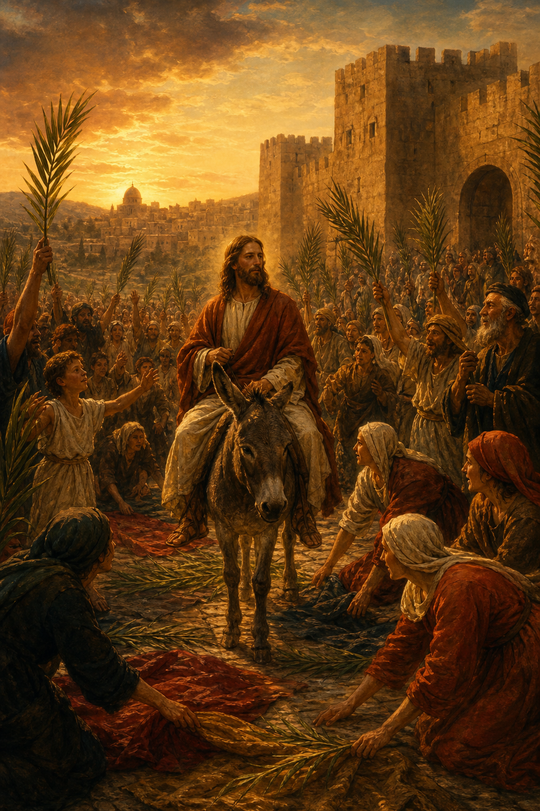

Old Testament · Book 38 of 39
Zechariah
A night of eight strange visions gives way to oracles of a coming king on a donkey, a pierced shepherd, and the LORD reigning at last over all the earth.
Zechariah prophesies alongside Haggai to the same discouraged returned exiles, but where Haggai is four blunt sermons, Zechariah is a sweeping, symbol-rich book: eight night visions followed by a question about fasting, and then two long oracles reaching toward a Messiah who will come first in humility and finally in glory.
Rejoice greatly, O daughter of Zion; shout, O daughter of Jerusalem: behold, thy King cometh unto thee: he is just, and having salvation; lowly, and riding upon an ass.
What happens in Zechariah
In a single night, Zechariah receives eight visions, a man among the myrtle trees, four horns and four craftsmen, a measuring line stretched over a city too full to wall in, filthy garments exchanged for clean ones on Joshua the high priest, a golden lampstand fed by two olive trees, a flying scroll, a woman named Wickedness sealed in a basket, and four chariots patrolling the earth. Through these pictures the LORD promises to rebuild Jerusalem, cleanse its priesthood, and establish his people again, not by military might or human power, but by his Spirit. A man called "the BRANCH" is named as the one who will build the true temple and unite the offices of priest and king. After this comes a question about whether old fasts of mourning are still necessary, and the LORD answers with promises of a city once again full of old men, old women, and children playing in its streets. The book's final section turns toward prophecy: a King will come to Jerusalem lowly and riding on a donkey; a good shepherd will be rejected and sold for thirty pieces of silver, only to see his flock scattered when the shepherd is struck down; and in the end, the people will look on the one they have pierced and mourn, before the LORD himself stands on the Mount of Olives, splits it in two, and becomes King over all the earth, with even the bells on horses engraved "HOLINESS UNTO THE LORD."
Why it matters
No other Old Testament book outside Isaiah supplies more direct material for the Gospel writers describing Jesus's final week, the triumphal entry on a donkey, the thirty pieces of silver, the striking of the shepherd and the scattering of the disciples, and the piercing on the cross. Zechariah's visions insist that rebuilding God's house and God's people is never ultimately a matter of resources or strategy but of the Spirit, and its closing chapters stretch that promise all the way to a day when the LORD's kingship and holiness will be as plain and total as writing on a horse's bridle.
Jump to a chapter
Zechariah has 14 chapters — select one to begin reading there.